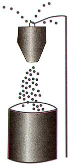

Country Lore: Energy Conservation Tips
Lorraine Berger shares energy conservation tips; Ethel Stilwell provides a recipe for hand lotion; Richard Hayes advises septic tank owners to drain the tank before trying to free the line; Robert Owens uses a detergent spray to attract bees; Phyllis Adolph shares recipes for homemade firestarters; John Herdon uses a hose to line the top of a wheelbarrow to keep it from scratching and denting surfaces; John Knioca gives several home remedies; Paul Agiopavlites loves the wire-mesh tomato tower in his garden.
By Lorraine Berger
June/July 2002
Energy Conservation Tips
This is my favorite area of discussion. I live in Arizona, where electric bills in summer usually run between $150 and $300 per month. These are the steps I have taken to reduce my energy consumption:
I changed all high-use lights to compact fluorescent bulbs. This required 14 bulbs altogether, at an average cost of $8 per bulb. (Youcan get these super-long-life, high-efficiency bulbs for $4 to $5 each at www.betterbulbsdirect.com .-MOTHER)
I switched to hand-washing my dishes rather than using the dishwasher, except for once a week. This also saves on my water bills.
IÂ turn up my thermostat to 83 to 85 degrees during the hottest part of the day and spend most of that time in our basement family room or somewhere like the library, museum, etc.
I hang my clothes out to dry, completely eliminating the clothes dryer. For clothes that cannot be hung outside, I hang them on a rod in the laundry room.
Lastly, I made window blankets for my east and south windows from fabric and a heat-reflective material. These help keep the room much cooler. Here is my Web site for those who are interested in the blankets: www.geocities.com/sol_mate2002 . These blankets can also be used in the winter. Simply face the reflective material into the house, rather than toward the window.
LORRAINE BERGER
Mesa, Arizona
Drainfield Danger
W ell it was finally time. Year after year, when the snow turned to slush and the ground became good and saturated, the plumbing would slow down and then stop. We'd dealt with it before-pumping, plunging, rodding, cleaning, even enzymes-but there could be no other explanation now. The septic field was clogged.
I'd noticed the approximate location of the drainage field before, where the grass was greener. So on a pleasant summer's day, I took a shovel and dug. Finally, I hit pay dirt . . . or rather, drain tile. It was a shallow field-3 to 4 feet-probably dug about 1946. The tiles were jammed tightly together, with no openings, overlapping coverings or gravel. And sure enough, they were absolutely full of dirt and bone dry. So I moved upstream (toward the house) and tried again. And again. And again.
Finally, I found a moist one, full of a rich, black paste, reminiscent of uncooked brownie batter. Thinking there might be something plugging the route, I got down on my stomach, reached way down with my hand and pushed a twig into the hole. I poked and prodded, twisted and flicked, until it started moving.
The brownie batter began to ooze forth, curling and coiling over on itself like the dark, wicked sister of some evil toothpaste. The thick, shiny goo now undulated of its own accord, sensuously uncoiling from its tight girdle of confinement.
It was good to lie down and just watch Nature take her course, to know I'd found the problem. But from out of nowhere my brain flashed a message: The show you are now watching is 4 feet below ground level on a direct and continuous slant from the septic tank. The tank is nearly full. Uphill. You've just opened the line. Watch out you idiot, she's gonna blow!
Instantly, I snapped back and rolled to cover just in time. With much hissing and sputtering a spout a good 6 feet tall appeared. Awed by the spectacle of my own personal geyser, I could only watch in wonder as the entire contents of the tank spewed into the trench before me, filling it with a noxious, bubbling stew of human waste, most of it my own.
Fortunately for me, it was a dry summer with little wind. "The Pit" drained and dried. I dug more trenches, poured gravel and laid tile the right way. It worked. But unless you're a big fan of very pungent volcanoes, always, always, always empty your tank first, dig from the top toward the bottom, and never, ever poke a stick where the sun don't shine.
RICHARD L. HAYES
Orland Park, Illinois
Great Hand Lotion
I've finally found the hand lotion recipe that you published back in the '70s or '80s. This is the greatest hand lotion ever. It will help the worst case of dried or chapped hands in a matter of days!
MOTHER EARTH'S HAND LOTION
2 ounces antiseptic green soap
(also known as tincture of green soap)
2 ounces glycerin
4 ounces Bay Rum (old-time aftershave lotion)
Just mix and rub on hands or feet.
ETHEL STILWELL
Sanford, Michigan
Detergent Bug Killer
A friend, who is a professional painter, taught me this trick for killing wasps: Spray them on their nest with a solution of a little dish-washing detergent in a cup of water. They drop dead as soon as the detergent solution hits them.
I applied this new knowledge to another pest, the Japanese beetles that were destroying my mom's trees. Garden centers and hardware stores sell a Japanese beetle trap that only holds roughly 200 beetles in a disposable bag that you have to purchase-if you can find them-for $3 each. I figured out a way to improve the trap without having to purchase any more bags. The trap uses a pheromone scent packet to attract the beetles, which then drop through the funnel of the trap into the disposable holding bag. I simply cut the bag part off, leaving the funnel part. I then placed a 5-gallon bucket of water with a teaspoon of dish washing liquid under the funnel. You will kill beetles by the thousands.
ROBERT OWENS
Bowling Green,
Kentucky
Detergent sprays are also effective against many other garden pests, but will sometimes burn leaves of sensitive plants. For similar safe insect control with less risk of burning, use commercial insecticidal soap. Be sure to mix the soap with soft water (rainwater or distilled water); it won't work properly if you use hard water.-MOTHER
Homemade Firestarters
All year long I pick up attractive baskets at garage sales and turn them into interesting and appreciated gifts for birthdays and holidays. One of my favorite ideas is making "firestarters." There are two ways to do this.
Melt wax (old candle stubs work well) in a coffee can sitting in a pan of simmering water. Use care as wax is very flammable. Add several crayon stubs for color and a few drops of flavoring oil if you want scented firestarters. Dip pine cones into the wax mixture and roll them around to completely coat the cone. Drain on a rack over wax paper (drippings can be peeled off and reused). When cool and wax is hardened, place cones in a basket and add a colorful ribbon bow to the handle.
Or, pour melted wax over sawdust in paper egg cartons or muffins tins lined with cupcake papers. These may be colored and scented, also, if desired.
PHYLLIS ADOLPH
Roundup, Montana
Wheelbarrow Cushion
W e all use wheelbarrows and occasionally need to fit in tight quarters or wheel past delicate objects. Ferrying firewood between the boat and car comes to mind. The rim of a metal wheelbarrow can mark or damage objects.
My helpful hint consists of giving a leaky garden hose a new life. The hose can be used to measure the circumference of the wheelbarrow, then slit along its length with a razor knife. The corners can also be cut to prevent buckling. The hose can be permanently attached to the rim of the wheelbarrow by drilling small holes below the lip and using tie wraps to hold the hose in place. Not as soft as pipe insulation, but a hose is less likely to tear
JOHN HERNDON
Snohomish, Washington
Indiana-style Country Lore
Clean your windshield of bugs with a single-edge razor blade; buy them 100 to a box.
Got a critter between the walls? Turn on two or three radios, full volume, and go to town for half a day. When you come back, the creatures will be gone.
Don't bother with soap when you wash a car. It takes the wax off and isn't needed 99 percent of the time.
Give your body to organ donor organizations or a local university for research. Funeral traditions are not enjoyed by or paid for by the dead. I give flowers to living people, not dead.
Buy a pre-1987 full-size truck, and take care of it. It will only stay the same or go up in value. We have three; one has only 491,000 miles on it.
Throw away all of your credit cards; pay cash for everything. Avoid new houses and never buy a new vehicle.
JOHN KNIOCA
Vevay, Indiana
Best Lil' Greenhouse
I was going back through some of my old issues of Mother Earth News and came across an article about making wire-mesh tomato towers. I remember glossing over the article since I have employed these for the last eight years. I did want, however, to share something I just started doing these last few years. I wanted to extend my growing season a few more weeks but didn't want to spend a lot of extra cash. I then had the idea to open my tomato towers, lay them down lengthwise over prepared beds (6 feet long by 2 feet wide) and use plastic sheeting (cut into the appropriate lengths) to make the best little greenhouses in Kansas. I was able to add three weeks to my growing season by using these mini-greenhouses.
FATHER PAUL AGIOPAVLITES
Wichita, Kansas
For more on this very idea, see "Wire Mesh in the Garden," Page 96-MOTHER
|
BRIAN ORR |
 MICHELLE BAKER |
 |